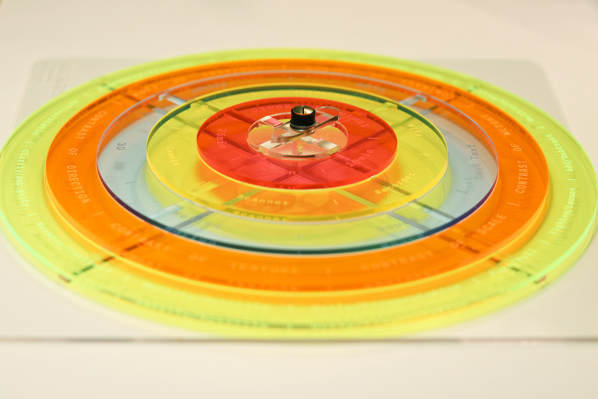
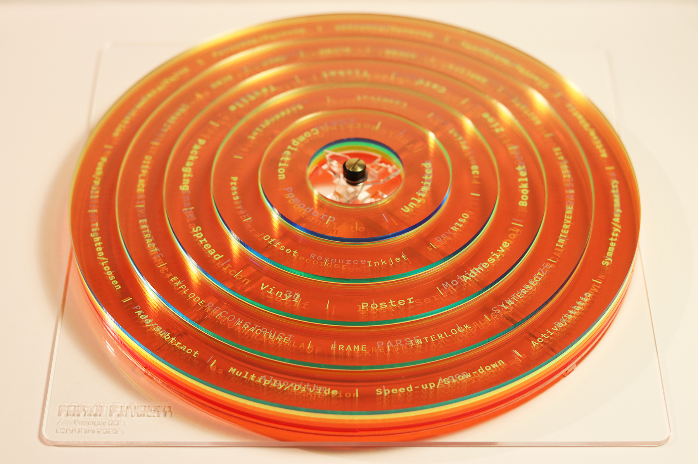
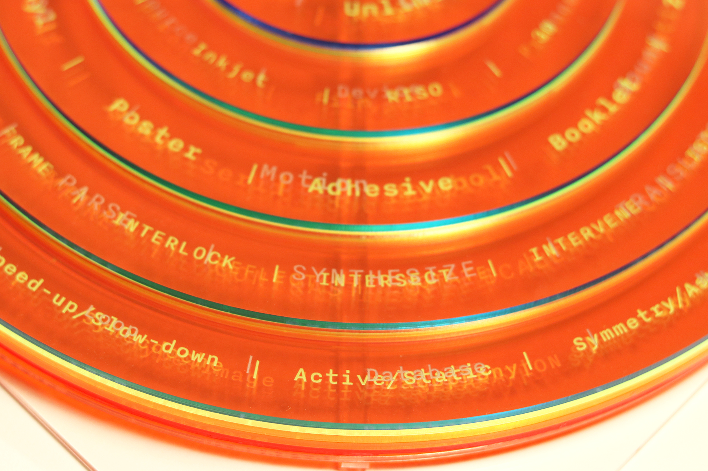
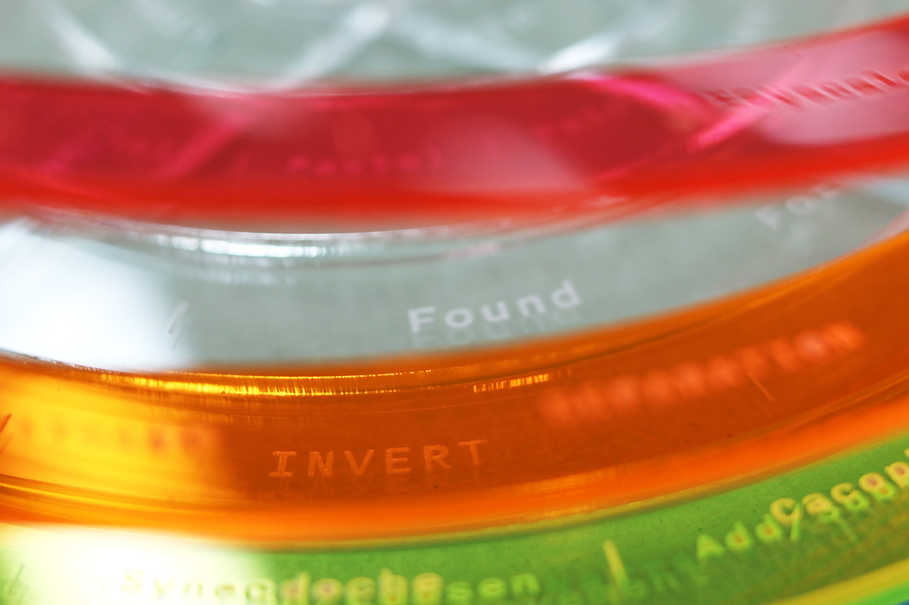
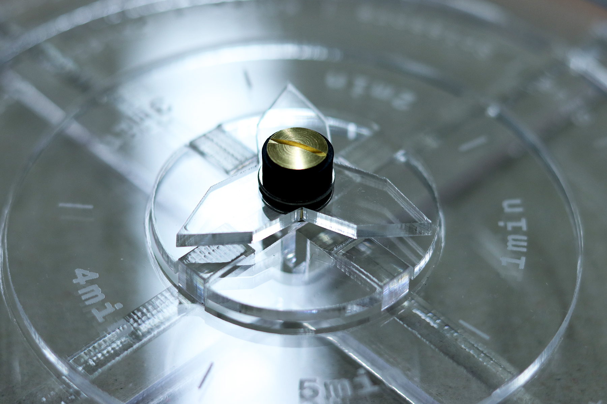

Instructions
- Plot the coordinates for each quest by choosing 5 rings and placing them on the compass.
- Spin the compass arrow. This will point the direction.
- Gather the appropriate materials and supplies. Set a timer if necessary.
- Players make forms based on how they interprete the coordinates directed by the Wayform Finder.
- After navigating and making forms, players must analyze the outcomes.
- Through collective critique, players must determine which forms best reflect the directed coordinates and why.
- The player with the strongest forms gets to chose whether to iterate the existing coordinates or plot new ones for the next quest.
Parts
- BASE ---> clear acrylic (x1)
- SLOTTED CROSSBRACES ---> clear acrylic (x2)
- SPINNER BASE ---> clear acrylic (x1)
- ARROWS ---> clear acrylic (x3)
- CHICAGO SCREW ---> brass (x1)
- WASHERS ---> aluminum (x2)
- DISKS ---> various acrylics (x6)
Demo Assembly
How Does It Work?
Players customize the coordinates by choosing and orientating the 5 rings. By spinning the compass arrow, the Wayform Finder points to a direction for the players to navigate. By following the directions, players challenge their inhibitions by interpreting the coordinates in their own way, making forms using materials, supplies, and tools they deem most appropriate for navigating the quest ahead.
The goal is to make forms that best reflect the plotted coordinates.
Making the forms is one thing, determining why they are the strongest forms is another. Through collaborative critique, players must critically analyze the forms they have made and as a team, decide on which forms are the strongest representatives of the plotted coordinates!
Gallery
    
About
The concept behind Wayform Finder is collaborative, open-ended, iterative play. By implementing simple constraints and guided conditions, players can trust-fall onto the process of making without the pressure of generating “creative” ideas. The point is not to create a pretty picture, but rather, to be shepherded by how you interpret design language.